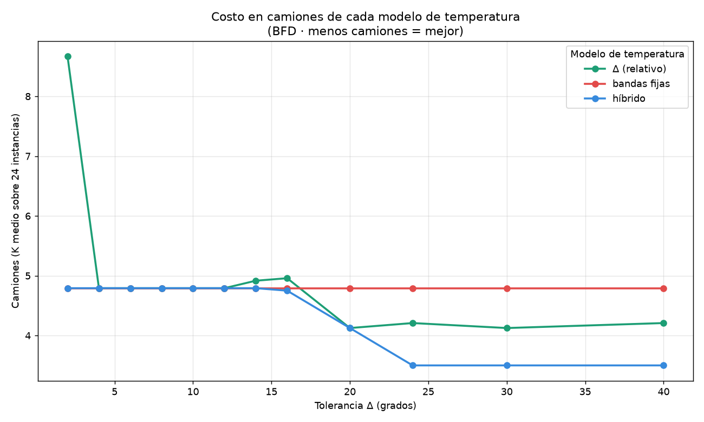
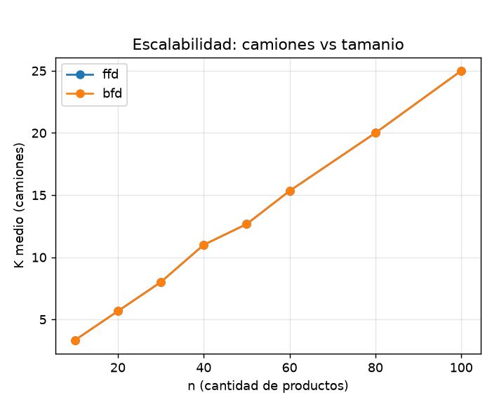
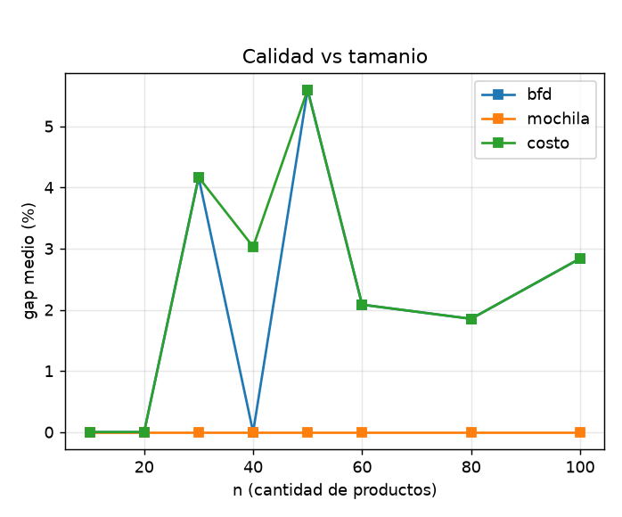

Pocos camiones, productos parecidos juntos y cadena de frío respetada.
Caso Todiafour · Bin Packing con similitud y temperatura
Presentarse. Contar en una frase de qué se trata: repartir los productos del día en camiones usando pocos camiones, pero cuidando que lo que viaja junto llegue bien.
La idea de la charla: mostrar qué decidimos, por qué, y qué evidencia lo respalda.
El problema
Tres piezas que no hay que mezclar
La nota
α·K − β·S
Califica una solución. K = camiones (queremos pocos). S = similitud de lo que viaja junto (queremos mucha).
Las reglas
Capacidad y temperatura
Dicen qué soluciones están permitidas. Un camión que las rompe no es "peor": no vale.
La receta
Heurísticas
Arman una solución rápido. No garantizan la mejor posible, pero dan una buena.
Ejemplo del enunciado: con la regla de temperatura, la solución que pone fideos (20°) con helado (−18°) queda prohibida. La mejor permitida usa un camión más: eso es lo que cuesta "llegar bien".
La similitud está en la nota; la temperatura está en las reglas. La heurística arma, las reglas filtran y la nota elige.
Con el ejemplo: la temperatura no cambia ninguna nota, elimina soluciones, y eso cuesta camiones.
Decisión 1 · Instancias
Generamos 52 instancias que se parecen a un supermercado
Categoría
Temperatura
Peso
Congelado
−18° ± 2
2 a 8
Refrigerado
4° ± 2
1 a 6
Ambiente
20° ± 2
1 a 10
Limpieza
20° ± 2
3 a 12
Caliente
65° ± 2
1 a 4
Similitud: 0.7 a 1 dentro de una categoría; 0 a 0.3 entre categorías.
Por qué así
Temperaturas y similitudes como las del enunciado (helado −18, yogur 4, fideos 20, comida lista 65).
Ambiente y limpieza a la misma temperatura, a propósito: prueban si la similitud evita "verdura aplastada por bidones".
Dos lotes de 24: camiones grandes (C = 100) y chicos (C = 20), de 10 a 100 productos, 3 semillas cada uno.
El enunciado pide justificar las instancias. Usamos categorías reales de supermercado. El ruido de ±2° es porque no todo se conserva exactamente igual.
Limitación honesta: las categorías quedan muy separadas; datos reales serían más mezclados.
Decisión 2 · Temperatura
La temperatura es una regla, con Δ = 6 grados
Qué elegimos
En cada camión: temperatura más alta − más baja ≤ Δ, con Δ = 6.
Por qué
Un camión se refrigera a una temperatura: mezclar helado con comida caliente es imposible, no "un poco peor".
Medimos: dentro de una categoría hay como mucho 4°; entre categorías, como mínimo 12°. Todo Δ entre 4 y 12 sirve; 6 queda en el medio.
parte categorías
Δ = 6 ✔
mezcla yogur y fideos
4°
6°
12°

Evidencia: entre Δ = 4 y 12 los tres modelos usan los mismos camiones (4.79).
Comparamos tres formas de aplicar la regla: Δ relativo, bandas fijas e híbrido. En el rango razonable empatan, así que elegimos la más simple y flexible.
Las bandas fijas no mejoran nunca (línea plana); el híbrido explota si Δ es muy chico.
Decisión 3 · α y β
Primero pocos camiones; la similitud desempata
Qué elegimos
α = 1 (un camión vale 1) y β = 1 / Smáx (toda la similitud posible vale 1).
Nota = K − S / Smáx
Por qué
El enunciado: "usar la menor cantidad de vehículos es la prioridad".
S / Smáx está entre 0 y 1: la similitud nunca alcanza para pagar un camión.
Sin números mágicos: sirve para instancias de cualquier tamaño.
Cómo se lee la nota
12.811 → redondeando, 13 camiones; lo que falta para 13 (0.189) es la similitud juntada: el 18.9% de la posible.
Lo que medimos (y todavía no se ve)
Con las heurísticas constructivas, α y β no cambian ninguna solución: probamos β = 1/Smáx y β = 1 en 104 casos y dieron idénticas. Ninguna tiene que elegir entre "un camión más" y "más similitud".
Esa elección aparece con la búsqueda local: ahí vamos a medir el efecto de α y β.
Lo importante es la proporción entre α y β, no los números sueltos. Con nuestra elección, si una solución usa un camión más, siempre es peor.
Ser honestos con la evidencia: hoy la elección no cambia resultados; la vamos a poder medir cuando esté la búsqueda local.
Decisión 4 · Heurísticas
Tres formas distintas de armar la solución
Heurística
Cómo arma
Qué prioriza
BFD
De mayor a menor peso, cada producto al camión más lleno donde entra.
No dejar huecos
MOCHILA
Un camión por vez: arranca por el más pesado y lo completa con el grupo que más lo llena.
Camiones llenos
COSTO
Cada producto al camión donde menos empeora la nota.
La similitud
Por qué estas
MOCHILA arranca por el más pesado: los chicos se acomodan en cualquier lado; los pesados, si quedan al final, obligan a abrir un camión.

Evidencia: FFD (primer camión donde entra) y BFD usan los mismos camiones: las curvas se tapan. Descartamos FFD y sumamos dos que piensan distinto.
Partimos de FFD y BFD, pero son casi la misma heurística: en 48 instancias, en promedio, los mismos camiones. El enunciado pide heurísticas distintas.
Detalle de MOCHILA: si llenara el camión "golosamente" daría igual que FFD; lo que la hace distinta es elegir el mejor grupo (problema de la mochila).
Evidencia · 48 instancias
Cada heurística gana en lo que prioriza
Caso (promedios)
BFD
MOCHILA
COSTO
Camiones, difícil sin temp.
12.62
12.33
12.67
Similitud, difícil sin temp.
34.0
25.2
35.7
Similitud, fácil sin temp.
159.7
162.0
163.4
Camiones, difícil Δ = 6
14.00
14.04
14.04
Similitud, difícil Δ = 6
59.4
61.2
61.0
MOCHILA: menos camiones cuando el empaque es difícil.
COSTO: más similitud cuando hay libertad.
Con Δ = 6 casi empatan: la temperatura ya agrupa casi todo.

Lote difícil sin temperatura: camiones de más respecto del mínimo posible. MOCHILA (naranja) queda en 0 en todos los tamaños.
Comparamos sobre muchas instancias, no una sola. El gap mide cuántos camiones de más se usan respecto de la cota inferior; 0 es el mínimo posible.
Verificamos 624 corridas con un chequeo aparte: ninguna rompe capacidad ni temperatura.
MOCHILA llena un camión al máximo antes de pasar al siguiente, así que junta más pares parecidos.
Elegimos esta instancia porque es la chica donde las tres dan distinto. Las tres usan 13 camiones; desempata la similitud y gana MOCHILA.
La explicación de los pares es la clave: no es magia, es cómo se reparte cada grupo entre los camiones.
Conclusiones
Las tres preguntas de Todiafour
1
¿Cuánto cuesta, en vehículos, transportar de forma razonable?
Respetar la cadena de frío cuesta en promedio ~1.4 a 1.8 camiones más por día (BFD: 12.62 → 14.00 y 2.96 → 4.79).
2
¿Se pueden armar buenas cargas en pocos minutos?
Sí: cada heurística resuelve hasta 100 productos en milisegundos (unos 20 ms por corrida).
3
¿Qué criterio conviene para decidir qué viaja junto?
La temperatura como regla (Δ = 6) y la similitud en la nota, como desempate: la temperatura separa casi todo y la similitud decide el resto (ambiente vs. limpieza).
Lo que sigue: búsqueda local (relocate y swap), metaheurística (GRASP) y medir "camiones primero" contra "similitud primero".
Cerrar respondiendo las preguntas del enunciado con números. Remarcar que ninguna heurística es mejor en todo, y que eso justifica comparar varias.
Si preguntan por α y β: hoy no cambian las constructivas; los vamos a medir con la búsqueda local.